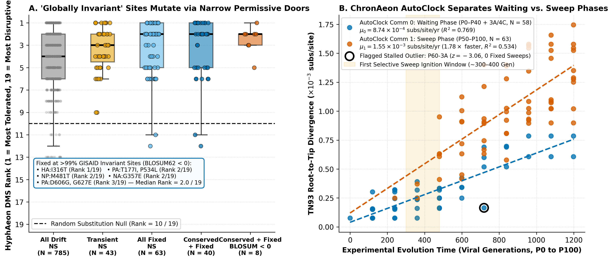
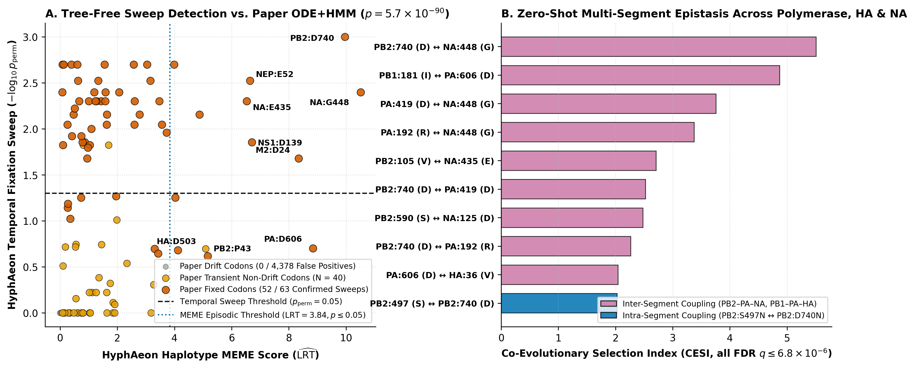

Why did 63.5% of fixed lab mutations hit positions that have been frozen for 58 years in humans?
In de Rooij et al. (2026), 12 seasonal influenza A/H3N2 populations evolved across 100 passages (~1,200 generations) in primary human airway cultures without antibodies or transmission bottlenecks:
Nearly two-thirds of fixed amino-acid swaps hit positions conserved across 118,000 human H3N2 sequences since 1968.
Zero-shot HyphAeon DMS shows those sites are tightly constrained overall ($\Phi = 1.20$), but mutated via their #1 or #2 most tolerated AA swap.
ChronAeon and HyphAeon analyze all 4,477 codons and 121 consensus genomes without ODE simulations or MCMC chains.
Narrow biophysical corridors (Rank 2/19) and a two-speed experimental clock

BLOSUM62 < 0 rank at median 2.0 / 19 in zero-shot HyphAeon DMS (HA:I316T Rank 1/19; PA:T177I, P534L Rank 2/19). Right: ChronAeon AutoClock ($\Delta\mathrm{AICc} = 100.3$) separates the P0–P40 waiting phase from the 1.78× faster P50–P100 sweep phase.
0 / 4,378 false positives in 19 seconds and 4 multi-segment epistatic sectors

hyphaeon temporal confirms 82.5% (52/63) of fixed NS sweeps with 0 false positives across 4,378 neutral codons ($p = 5.7 \times 10^{-90}$). Right: hyphaeon epistasis maps 10 co-selected pairs ($q \le 6.8 \times 10^{-6}$), linking PB2:D740N to PA and NA:G448S and recovering PB1:181 ↔ PA:606 ↔ HA:36.
Three lessons from 1,200 generations of H3N2 evolution
Globally conserved sites are tightly locked overall, but mutate through narrow residue-specific side doors that 1992 matrices misclassify.
ChronAeon AutoClock splits the drift-buffered lag phase from the post-passage-40 selective sweep regime directly from distances.
hyphaeon epistasis uncovers cross-segment polymerase–surface coupling missed by single-step $\Delta f$ correlation.